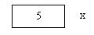
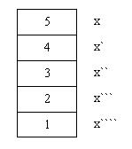

Primero debemos decir que la recursividad no es una estructura de datos, sino que es una técnica de programación que nos permite que un bloque de instrucciones se ejecute n veces. Remplaza en ocasiones a estructuras repetitivas.
Este concepto será de gran utilidad para el capítulo de la estructura de datos tipo árbol.
La recursividad es un concepto difícil de entender en principio, pero luego de analizar diferentes problemas aparecen puntos comunes.
En Java los métodos pueden llamarse a sí mismos. Si dentro de un método existe la llamada a sí mismo decimos que el método es recursivo.
Cuando un método se llama a sí mismo, se asigna espacio en la pila para las nuevas variables locales y parámetros.
Al volver de una llamada recursiva, se recuperan de la pila las variables locales y los parámetros antiguos y la ejecución se reanuda en el punto de la llamada al método.
Problema 1:
Implementación de un método recursivo.
Programa:
public class Recursividad {
void repetir() {
repetir();
}
public static void main(String[] ar) {
Recursividad re=new Recursividad();
re.repetir();
}
}
La función repetir es recursiva porque dentro de la función se llama a sí misma.
Cuando ejecuta este programa se bloqueará y generará una excepción: "Exception in thread "main" java.lang.StackOverflowError"
Analicemos como funciona:
Primero se ejecuta la función main, luego de crear un objeto llamamos a la función repetir.
Hay que tener en cuenta que cada vez que se llama a una función se reservan 4 bytes de la memoria que se liberarán cuando finalice su ejecución.
La primera línea de la función llama a la función repetir, es decir que se reservan 4 bytes nuevamente. Se ejecuta nuevamente una instancia de la función repetir y así sucesivamente hasta que la pila estática se colme y se cuelgue el programa.
Problema 2:
Implementación de un método recursivo que reciba un parámetro de tipo entero y luego llame en forma recursiva con el valor del parámetro menos 1.
Programa:
public class Recursividad {
void imprimir(int x) {
System.out.println(x);
imprimir(x-1);
}
public static void main(String[] ar) {
Recursividad re=new Recursividad();
re.imprimir(5);
}
}
Desde la main se llama a la función imprimir y se le envía el valor 5. El parámetro x recibe el valor 5. Se ejecuta el algoritmo de la función, imprime el contenido del parámetro (5) y seguidamente se llama a una función, en este caso a sí misma (por eso decimos que es una función recursiva), enviándole el valor 4.
El parámetro x recibe el valor 4 y se imprime en pantalla el cuatro, llamando nuevamente a la función imprimir enviándole el valor 3.
Si continuamos este algoritmo podremos observar que en pantalla se imprime:
5 4 3 2 1 0 ?1 ?2 ?3 . . . . . . . . .hasta que se bloquee el programa.
Tener en cuenta que cada llamada a una función consume 4 bytes por la llamada y en este caso 4 bytes por el parámetro x. Como nunca finaliza la ejecución completa de las funciones se desborda la pila estática por las sucesivas llamadas.
Problema 3:
Implementar un método recursivo que imprima en forma descendente de 5 a 1 de uno en uno.
Programa:
public class Recursividad {
void imprimir(int x) {
if (x>0) {
System.out.println(x);
imprimir(x-1);
}
}
public static void main(String[] ar) {
Recursividad re=new Recursividad();
re.imprimir(5);
}
}
Ahora si podemos ejecutar este programa y observar los resultados en pantalla. Se imprimen los números 5 4 3 2 1 y no se bloquea el programa.
Analice qué sucede cada vez que el if (x>0) se evalúa como falso, ¿a qué línea del programa retorna?
Problema 4:
Imprimir los números de 1 a 5 en pantalla utilizando recursividad.
Programa:
public class Recursividad {
void imprimir(int x) {
if (x>0) {
imprimir(x-1);
System.out.println(x);
}
}
public static void main(String[] ar) {
Recursividad re=new Recursividad();
re.imprimir(5);
}
}
Con este ejemplo se presenta una situación donde debe analizarse línea a línea la ejecución del programa y el porque de estos resultados.
¿Por qué se imprime en pantalla 1 2 3 4 5 ?
Veamos como se apilan las llamadas recursivas:
En la primera llamada desde la función main el parámetro x recibe el valor 5.
Cuando llamamos desde la misma función le enviamos el valor de x menos 1 y la memoria queda de la siguiente forma:

Debemos entender que el parámetro x en la nueva llamada está en otra parte de la memoria y que almacena un 4, nosotros le llamaremos x prima.
Comienza a ejecutarse la función, la condición del if se valúa como verdadero por lo que entra al bloque y llama recursivamente a la función imprimir pasándole el valor 3 al parámetro.

Nuevamente la condición se valúa como verdadero y llama a la función enviándole un 2, lo mismo ocurre cuando le envía un 1 y un 0.

void imprimir(int x) {
if (x>0) {
imprimir(x-1);
System.out.println(x);
}
}
Cuando x vale 0 la condición del if se valúa como falsa y sale de la función imprimir.
¿Qué línea ahora se ejecuta ?
Vuelve a la función main ? NO.
Recordemos que la última llamada de la función imprimir se había hecho desde la misma función imprimir por lo que vuelve a la línea:
System.out.println(x);
Ahora si analicemos que valor tiene el parámetro x. Observemos la pila de llamadas del gráfico:
x cuarta tiene el valor 1. Por lo que se imprime dicho valor en pantalla.
Luego de imprimir el 1 finaliza la ejecución de la función, se libera el espacio ocupado por el parámetro x y pasa a ejecutarse la siguiente línea donde se había llamado la función:
System.out.println(x);
Ahora x en esta instancia de la función tiene el valor 2.
Así sucesivamente hasta liberar todas las llamadas recursivas.
Es importante tener en cuenta que siempre en una función recursiva debe haber un if para finalizar la recursividad ( en caso contrario la función recursiva será infinita y provocará que el programa se bloquee)
Problema 5:
Otro problema típico que se presenta para analizar la recursividad es el obtener el factorial de un número.
Recordar que el factorial de un número es el resultado que se obtiene de multiplicar dicho número por el anterior y así sucesivamente hasta llegar a uno.
Ej. el factorial de 4 es 4 * 3 * 2 * 1 es decir 24.
Programa:
public class Recursividad {
int factorial(int fact) {
if (fact>0) {
int valor=fact * factorial(fact-1);
return valor;
} else
return 1;
}
public static void main(String[] ar) {
Recursividad re=new Recursividad();
int f=re.factorial(4);
System.out.println("El factorial de 4 es "+f);
}
}
La función factorial es recursiva porque desde la misma función llamamos a la función factorial.
Debemos hacer el seguimiento del problema para analizar como se calcula.
La memoria en la primera llamada:
fact recibe el valor 4 y valor se cargará con el valor que se obtenga con el producto de fact por el valor devuelto por la función factorial (llamada recursiva)

Nuevamente se llama recursivamente hasta que el parámetro fact reciba el valor 0.

Cuando fact recibe un cero la condición del if se valúa como falsa y ejecuta el else retornando un 1, la variable local de la llamada anterior a la función queda de la siguiente manera:

Es importantísimo entender la liberación del espacio de las variables locales y los parámetros en las sucesivas llamadas recursivas.
Por último la función main recibe "valor", en este caso el valor 24.
Problema 6:
Implementar un método recursivo para ordenar los elementos de un vector.
Programa:
class Recursivdad {
static int [] vec = {312, 614, 88, 22, 54};
void ordenar (int [] v, int cant) {
if (cant > 1) {
for (int f = 0 ; f < cant - 1 ; f++)
if (v [f] > v [f + 1]) {
int aux = v [f];
v [f] = v [f + 1];
v [f + 1] = aux;
}
ordenar (v, cant - 1);
}
}
void imprimir () {
for (int f = 0 ; f < vec.length ; f++)
System.out.print (vec [f] + " ");
System.out.println("\n");
}
public static void main (String [] ar) {
Recursivdad r = new Recursivdad();
r.imprimir ();
r.ordenar (vec, vec.length);
r.imprimir ();
}
}
Hasta ahora hemos visto problemas que se pueden resolver tanto con recursividad como con estructuras repetitivas.
Es muy importante tener en cuenta que siempre que podamos emplear un algoritmo no recursivo será mejor (ocupa menos memoria de ram y se ejecuta más rápidamente)
Pero hay casos donde el empleo de recursividad hace mucho más sencillo el algoritmo (tener en cuenta que no es el caso de los tres problemas vistos previamente)